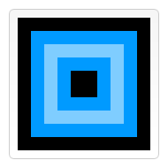
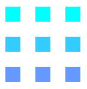
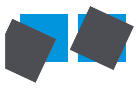
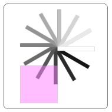

Transformations
Earlier in this tutorial we've learned about the canvas grid and the coordinate space. Until now, we only used the default grid and changed the size of the overall canvas for our needs. With transformations there are more powerful ways to translate the origin to a different position, rotate the grid and even scale it.
Saving and restoring state
Before we look at the transformation methods, let's look at two other methods which are indispensable once you start generating ever more complex drawings.
save()-
Saves the entire state of the canvas.
restore()-
Restores the most recently saved canvas state.
Canvas states are stored on a stack. Every time the save() method is called, the current drawing state is pushed onto the stack. A drawing state consists of
- The transformations that have been applied (i.e.
translate,rotateandscale– see below). - The current values of the following attributes:
- The current clipping path, which we'll see in the next section.
You can call the save() method as many times as you like. Each time the restore() method is called, the last saved state is popped off the stack and all saved settings are restored.
A save and restore canvas state example
This example tries to illustrate how the stack of drawing states functions by drawing a set of consecutive rectangles.
function draw() {
const ctx = document.getElementById("canvas").getContext("2d");
ctx.fillRect(0, 0, 150, 150); // Draw a rectangle with default settings
ctx.save(); // Save the default state
ctx.fillStyle = "#09F"; // Make changes to the settings
ctx.fillRect(15, 15, 120, 120); // Draw a rectangle with new settings
ctx.save(); // Save the current state
ctx.fillStyle = "#FFF"; // Make changes to the settings
ctx.globalAlpha = 0.5;
ctx.fillRect(30, 30, 90, 90); // Draw a rectangle with new settings
ctx.restore(); // Restore previous state
ctx.fillRect(45, 45, 60, 60); // Draw a rectangle with restored settings
ctx.restore(); // Restore original state
ctx.fillRect(60, 60, 30, 30); // Draw a rectangle with restored settings
}
The first step is to draw a large rectangle with the default settings. Next we save this state and make changes to the fill color. We then draw the second and smaller blue rectangle and save the state. Again we change some drawing settings and draw the third semi-transparent white rectangle.
So far this is pretty similar to what we've done in previous sections. However once we call the first restore() statement, the top drawing state is removed from the stack, and settings are restored. If we hadn't saved the state using save(), we would need to change the fill color and transparency manually in order to return to the previous state. This would be easy for two properties, but if we have more than that, our code would become very long, very fast.
When the second restore() statement is called, the original state (the one we set up before the first call to save) is restored and the last rectangle is once again drawn in black.
| Screenshot | Live sample |
|---|---|
|  |
Translating
The first of the transformation methods we'll look at is translate(). This method is used to move the canvas and its origin to a different point in the grid.
translate(x, y)-
Moves the canvas and its origin on the grid.
xindicates the horizontal distance to move, andyindicates how far to move the grid vertically.

It's a good idea to save the canvas state before doing any transformations. In most cases, it is just easier to call the restore method than having to do a reverse translation to return to the original state. Also if you're translating inside a loop and don't save and restore the canvas state, you might end up missing part of your drawing, because it was drawn outside the canvas edge.
A translate example
This example demonstrates some of the benefits of translating the canvas origin. Without the translate() method, all of the rectangles would be drawn at the same position (0,0). The translate() method also gives us the freedom to place the rectangle anywhere on the canvas without having to manually adjust coordinates in the fillRect() function. This makes it a little easier to understand and use.
In the draw() function, we call the fillRect() function nine times using two for loops. In each loop, the canvas is translated, the rectangle is drawn, and the canvas is returned back to its original state. Note how the call to fillRect() uses the same coordinates each time, relying on translate() to adjust the drawing position.
function draw() {
const ctx = document.getElementById("canvas").getContext("2d");
for (let i = 0; i < 3; i++) {
for (let j = 0; j < 3; j++) {
ctx.save();
ctx.fillStyle = `rgb(${51 * i}, ${255 - 51 * i}, 255)`;
ctx.translate(10 + j * 50, 10 + i * 50);
ctx.fillRect(0, 0, 25, 25);
ctx.restore();
}
}
}
| Screenshot | Live sample |
|---|---|
|  |
Rotating
The second transformation method is rotate(). We use it to rotate the canvas around the current origin.
rotate(angle)-
Rotates the canvas clockwise around the current origin by the
anglenumber of radians.

The rotation center point is always the canvas origin. To change the center point, we will need to move the canvas by using the translate() method.
A rotate example
In this example, we'll use the rotate() method to first rotate a rectangle from the canvas origin and then from the center of the rectangle itself with the help of translate().
Note: Angles are in radians, not degrees. To convert, we are using: radians = (Math.PI/180)*degrees.
function draw() {
const ctx = document.getElementById("canvas").getContext("2d");
// left rectangles, rotate from canvas origin
ctx.save();
// blue rect
ctx.fillStyle = "#0095DD";
ctx.fillRect(30, 30, 100, 100);
ctx.rotate((Math.PI / 180) * 25);
// grey rect
ctx.fillStyle = "#4D4E53";
ctx.fillRect(30, 30, 100, 100);
ctx.restore();
// right rectangles, rotate from rectangle center
// draw blue rect
ctx.fillStyle = "#0095DD";
ctx.fillRect(150, 30, 100, 100);
ctx.translate(200, 80); // translate to rectangle center
// x = x + 0.5 * width
// y = y + 0.5 * height
ctx.rotate((Math.PI / 180) * 25); // rotate
ctx.translate(-200, -80); // translate back
// draw grey rect
ctx.fillStyle = "#4D4E53";
ctx.fillRect(150, 30, 100, 100);
}
To rotate the rectangle around its own center, we translate the canvas to the center of the rectangle, then rotate the canvas, then translate the canvas back to 0,0, and then draw the rectangle.
| Screenshot | Live sample |
|---|---|
|  |
Scaling
The next transformation method is scaling. We use it to increase or decrease the units in our canvas grid. This can be used to draw scaled down or enlarged shapes and bitmaps.
scale(x, y)-
Scales the canvas units by x horizontally and by y vertically. Both parameters are real numbers. Values that are smaller than 1.0 reduce the unit size and values above 1.0 increase the unit size. Values of 1.0 leave the units the same size.
Using negative numbers you can do axis mirroring (for example using translate(0,canvas.height); scale(1,-1); you will have the well-known Cartesian coordinate system, with the origin in the bottom left corner).
By default, one unit on the canvas is exactly one pixel. If we apply, for instance, a scaling factor of 0.5, the resulting unit would become 0.5 pixels and so shapes would be drawn at half size. In a similar way setting the scaling factor to 2.0 would increase the unit size and one unit now becomes two pixels. This results in shapes being drawn twice as large.
A scale example
In this last example, we'll draw shapes with different scaling factors.
function draw() {
const ctx = document.getElementById("canvas").getContext("2d");
// draw a simple rectangle, but scale it.
ctx.save();
ctx.scale(10, 3);
ctx.fillRect(1, 10, 10, 10);
ctx.restore();
// mirror horizontally
ctx.scale(-1, 1);
ctx.font = "48px serif";
ctx.fillText("MDN", -135, 120);
}
| Screenshot | Live sample |
|---|---|
Transforms
Finally, the following transformation methods allow modifications directly to the transformation matrix.
transform(a, b, c, d, e, f)-
Multiplies the current transformation matrix with the matrix described by its arguments. The transformation matrix is described by:
If any of the arguments are
Infinitythe transformation matrix must be marked as infinite instead of the method throwing an exception.
The parameters of this function are:
a (m11)-
Horizontal scaling.
b (m12)-
Horizontal skewing.
c (m21)-
Vertical skewing.
d (m22)-
Vertical scaling.
e (dx)-
Horizontal moving.
f (dy)-
Vertical moving.
setTransform(a, b, c, d, e, f)-
Resets the current transform to the identity matrix, and then invokes the
transform()method with the same arguments. This basically undoes the current transformation, then sets the specified transform, all in one step. resetTransform()-
Resets the current transform to the identity matrix. This is the same as calling:
ctx.setTransform(1, 0, 0, 1, 0, 0);
Example for transform and setTransform
function draw() {
const ctx = document.getElementById("canvas").getContext("2d");
const sin = Math.sin(Math.PI / 6);
const cos = Math.cos(Math.PI / 6);
ctx.translate(100, 100);
let c = 0;
for (let i = 0; i <= 12; i++) {
c = Math.floor((255 / 12) * i);
ctx.fillStyle = `rgb(${c}, ${c}, ${c})`;
ctx.fillRect(0, 0, 100, 10);
ctx.transform(cos, sin, -sin, cos, 0, 0);
}
ctx.setTransform(-1, 0, 0, 1, 100, 100);
ctx.fillStyle = "rgba(255, 128, 255, 0.5)";
ctx.fillRect(0, 50, 100, 100);
}
| Screenshot | Live sample |
|---|---|
|  |